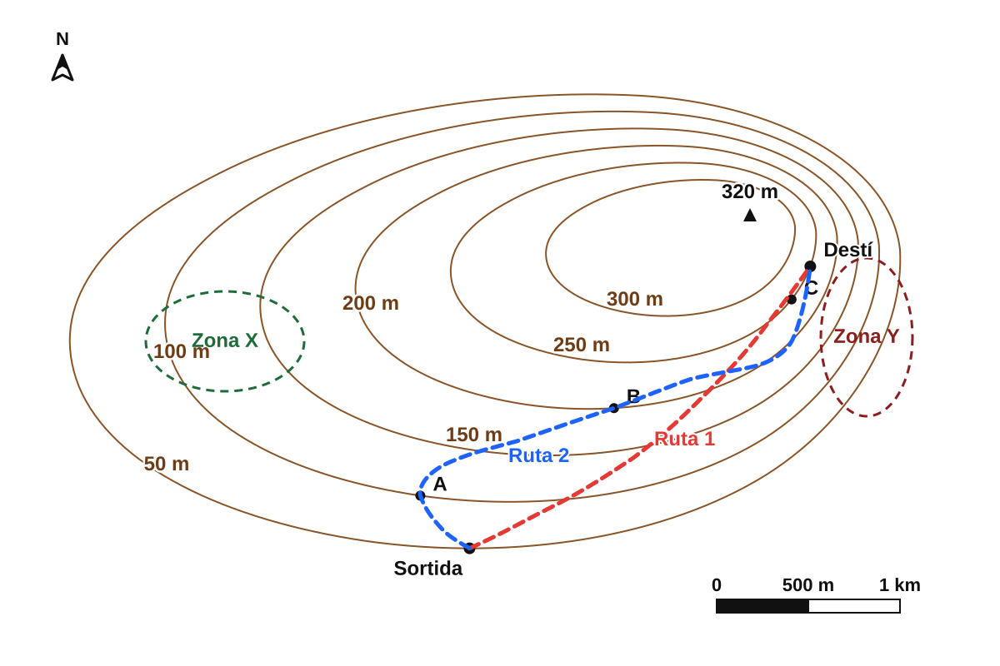

GEO-02 · Del mapa al relleu¶
Com podem representar una muntanya en un full pla?¶
1 · Un problema de representació¶

Com podríem representar aquest relleu en un full pla sense perdre la informació sobre l'altura?
Pensau-ho durant mig minut i comentau una proposta amb la persona del costat.
2 · Tallam el relleu¶
Imaginem que travessam el terreny amb un pla perfectament horitzontal.
Què passa amb la línia de contacte entre el pla i el relleu quan pujam el pla?


3 · I si miram cada tall des de dalt?¶
Ara miram el mateix territori en planta i hi projectam la línia de contacte de cada tall.


Què conserva cada línia del relleu original?
4 · Descobrim la regla¶

Quins dos punts estan exactament a la mateixa altitud?
Una corba de nivell és una línia que uneix punts situats a la mateixa altitud.
5 · Quina és la cota?¶
Tornau a mirar els punts del mapa.
El punt B és damunt una corba de nivell. Quina és la seva cota?
La cota és l'altitud d'un punt respecte del nivell de la mar. Si el punt és damunt una corba de nivell, la seva cota coincideix amb el valor d'aquella corba.
6 · I si no hi ha número?¶
Suposau que aquestes són cinc corbes de nivell consecutives d'un mapa:
100 m → ? → 200 m → ? → 300 m
Quines cotes tenen les dues corbes sense número?
L'equidistància és la diferència d'altitud entre dues corbes de nivell consecutives. En aquest cas és de 50 m.
7 · On és més alt?¶
Ara combinam el que sabem sobre corbes de nivell i cotes.
Quin ordre situa els punts de menor a major altitud?
Un mapa topogràfic ens permet comparar altituds encara que no hàgim vist el relleu directament.
8 · Les línies ens diuen alguna cosa més¶
Fins ara hem utilitzat les corbes per saber a quina altitud és un lloc. Però la seva separació també ens informa de com canvia l'altitud amb la distància.

En quina zona guanyaríeu més altitud recorrent una distància horitzontal curta?
Corbes juntes → pendent fort. Corbes separades → pendent suau.
9 · Més alt no vol dir més pendent¶
Ara compararem dues zones diferents del mateix mapa. P és en una zona més alta que Q.
Quina de les dues zones té el pendent més fort?
Altitud i pendent són variables diferents: un lloc baix pot ser molt costerut i un lloc alt pot tenir un pendent relativament suau.
10 · Quina distància recorrerem?¶
Un mapa no només redueix el relleu: també redueix les distàncies. Per recuperar la distància real necessitam una referència.
Comparau la longitud M–N amb l'escala gràfica. Quina distància real aproximada representa?
L'escala relaciona una distància mesurada al mapa amb la distància real. En una escala gràfica, podem comparar directament una longitud del mapa amb la barra graduada.
Atenció: aquesta és la distància en línia recta entre M i N. Un camí real que faci revolts pot ser més llarg.
11 · Quin camí triaríeu?¶
Hem d'anar des de la sortida fins al destí. Tenim dues rutes possibles.
La nostra prioritat és evitar una pujada massa forta, encara que haguem de recórrer més distància.
Quina ruta és més curta?
Quina ruta permet guanyar altitud de manera més gradual?
Mateix desnivell + més distància de recorregut → pujada més gradual.
Per tant: la ruta 1 és més curta; la ruta 2 té una pujada més suau.
12 · No basta triar: justifica-ho¶
Per a aquest grup hem decidit triar la ruta 2 perquè la prioritat és evitar una pujada massa forta.
Quina explicació justifica millor la decisió?
La ruta 2 té trams gairebé paral·lels a les corbes i les va travessant progressivament. Així recorrem més distància per guanyar el mateix desnivell i la pujada resulta més suau.
Decisió → evidència → explicació
Triam la ruta 2 → travessa les corbes més gradualment → guanya altitud més a poc a poc.
I si la prioritat fos arribar-hi pel recorregut més curt? En aquest cas triaríem la ruta 1.
13 · Què podem llegir d'un mapa topogràfic?¶
Hem anat resolent problemes diferents. Ara reunim les pistes que ens dona el mapa.
CORBES DE NIVELL → ALTITUD → PENDENT → DISTÀNCIA → DECISIÓ
1 · Altitud¶
- Una corba de nivell uneix punts situats a la mateixa altitud.
- La cota indica l'altitud d'un punt respecte del nivell de la mar.
- L'equidistància és la diferència d'altitud entre dues corbes consecutives.
2 · Pendent¶
- Si les corbes estan molt juntes, l'altitud canvia ràpidament en poca distància: pendent fort.
- Si estan més separades, el canvi és més gradual: pendent suau.
- Més alt no significa necessàriament més pendent.
3 · Distància¶
- L'escala relaciona una distància representada al mapa amb la distància real.
- Una ruta amb revolts pot ser molt més llarga que la distància en línia recta entre dos punts.
4 · Prendre decisions¶
Per comparar recorreguts no basta mirar-ne la forma. Hem de combinar evidències:
com travessa les corbes + quina distància recorre + quin és el nostre objectiu.
14 · Què pots deduir del mapa?¶
Observa el mapa topogràfic i respon breument, però justificant sempre la resposta amb una evidència del mapa.

1 · Altitud¶
Quin dels punts A, B o C està situat a més altitud?
Explica com ho pots saber a partir de les corbes de nivell.
2 · Pendent¶
A quina zona, X o Y, el pendent és més fort?
Indica quina característica de les corbes de nivell t'ho permet deduir.
3 · Decidir una ruta¶
Si l'objectiu és arribar al Destí amb una pujada tan gradual com sigui possible, quina triaries: Ruta 1 o Ruta 2?
Justifica la resposta a partir de com la ruta travessa les corbes de nivell i de la distància que recorre.
Abans d'entregar: comprova que a cada resposta has indicat quina evidència del mapa has utilitzat.
15 · I si tallam el territori per A–B?¶
Teniu davant el mapa topogràfic imprès en A3. Localitzau els punts A i B i seguiu amb el dit la línia recta que els uneix.
Imaginem que poguéssim fer un tall vertical del terreny exactament al llarg d'A–B i mirar el relleu de costat.
Quina forma creis que tendria?
Abans de mesurar res, fixau-vos en com la línia A–B travessa les corbes de nivell. Pensau on esperau trobar pujades, baixades i trams més costeruts.
On esperau que el tall sigui més costerut?
Aquest tall del relleu vist de costat és el que anomenam un perfil topogràfic.
Predicció: sense dibuixar encara el perfil, assenyalau amb el dit un tram d'A–B que espereu que sigui especialment costerut i explicau per què.
16 · Guardam les petjades d'A–B¶
Per construir el perfil no necessitam copiar tot el mapa. Primer hem de conservar on canvia l'altitud al llarg d'A–B.
Feina sobre el mapa A3¶
- Col·locau una tira estreta de paper exactament damunt la línia A–B.
- Marcau a la tira els extrems A i B.
- Feis una petita marca cada vegada que A–B travessa una corba de nivell.
- Manteniu l'ordre i la separació entre les marques: encara no hi escrigueu les cotes.
Cada marca correspon a una intersecció entre A–B i una corba de nivell: conserva la posició horitzontal d'un punt que després traslladarem al perfil.
Comprovació: abans de continuar, revisau de nou A–B de principi a fi. No vos deixeu cap corba sense marcar.
17 · Donam altitud a cada marca¶
La tira ja conserva on A–B travessa cada corba. Ara hem d'afegir la segona dada que necessitarem per construir el perfil: a quina altitud és cada punt.
Feina sobre la tira¶
- Tornau a col·locar la tira exactament damunt A–B.
- A cada marca, identificau quina corba de nivell travessa la línia.
- Si la corba duu la cota escrita, copiau-ne el valor al costat de la marca.
- Si no duu número, seguiu la corba fins a trobar-ne la cota o deduïu-la a partir de les corbes numerades pròximes i l'equidistància.
- Repetiu-ho de A cap a B fins que totes les marques tenguin una altitud.
Una de les corbes que travessa A–B no té la cota escrita just al costat. Què hem de fer?
Cada marca = posició al llarg d'A–B + altitud
Comprovació: llegiu les cotes d'A cap a B. Si la seqüència només puja sense baixar mai, revisau el mapa: A–B travessa un relleu amb pujades i baixades.
18 · Duim les marques al paper mil·limetrat¶
Ja tenim, per a cada intersecció, dues dades: on és al llarg d'A–B i quina cota té. Ara començarem a construir el gràfic, però de moment només traslladarem la posició horitzontal.
TIRA D'A–B → EIX HORITZONTAL DEL PERFIL
Feina sobre el paper mil·limetrat¶
- Dibuixau una línia horitzontal amb la mateixa longitud que el tram A–B de la tira.
- Marcau A a l'extrem esquerre i B a l'extrem dret.
- Col·locau la tira sobre aquesta línia, fent coincidir exactament els dos extrems.
- Traslladau a l'eix totes les marques de les interseccions, sense canviar-ne la separació.
- Des de cada marca, traçau molt suaument una guia vertical cap amunt.
Encara no situeu cap punt a una altitud concreta. Ho farem a la passa següent.
La clau és conservar exactament la separació entre les marques: l'eix horitzontal representa la posició al llarg d'A–B, no una successió de punts equidistants.
Comprovació: posau de nou la tira sobre l'eix. Totes les marques del paper mil·limetrat han de coincidir amb les de la tira.
19 · Ara donam altura als punts¶
L'eix horitzontal ja ens diu on és cada intersecció al llarg d'A–B. Ara necessitam la segona coordenada: a quina altitud és.
POSICIÓ HORITZONTAL + COTA → PUNT DEL PERFIL
Construïm l'eix vertical¶
- A l'extrem esquerre del gràfic, dibuixau un eix vertical i escriviu-hi Altitud (m).
- Fixau amb el docent una escala vertical regular que inclogui totes les cotes de la tira.
- Marcau els valors d'altitud mantenint sempre la mateixa separació per a un mateix increment de metres.
- Per a cada marca de l'eix horitzontal, seguiu la seva guia vertical fins arribar a la cota que teniu escrita a la tira.
- En aquesta intersecció, feis un punt petit i precís.
- Repetiu-ho fins haver situat totes les marques.
Encara no uniu els punts. Primer comprovarem que tots són al lloc correcte.
Cada punt combina les dues dades que hem anat preparant: on és al llarg d'A–B i a quina altitud és.
Comprovació: si dues marques de la tira tenen la mateixa cota, els seus punts han de quedar a la mateixa altura del gràfic, encara que estiguin molt separats horitzontalment.
20 · Reconstruïm el relleu¶
Ja tenim tots els punts situats. Ara deixam de veure una col·lecció de coordenades i començam a veure la forma del terreny al llarg d'A–B.
PUNTS DEL PERFIL → LÍNIA DEL RELLEU
Dibuixam el perfil¶
- Revisau una darrera vegada que tots els punts siguin a la posició horitzontal i a la cota correctes.
- Començau a A i avançau cap a B.
- Uniu els punts consecutius amb una única línia contínua i suau que passi per tots ells.
- No utilitzeu la regla per convertir el relleu en una successió de segments rígids: el terreny real no forma angles a cada corba de nivell.
- Manteniu la línia neta i no tapeu els punts fins haver comprovat que el perfil és coherent.
Què hauria de passar al perfil en un tram on A–B travessa moltes corbes de nivell molt juntes?
Corbes juntes al mapa ↔ pendent fort al perfil.
Tornam a la predicció del punt 15¶
Mirau el perfil acabat i comparau-lo amb el que havíeu imaginat abans de començar.
- On apareixen les pujades i baixades?
- Quin tram és més costerut?
- Coincideix amb el sector d'A–B on les corbes estaven més juntes?
Idea clau: el mapa topogràfic i el perfil són dues representacions diferents del mateix relleu: una vista des de dalt i l'altra vista de costat seguint A–B.